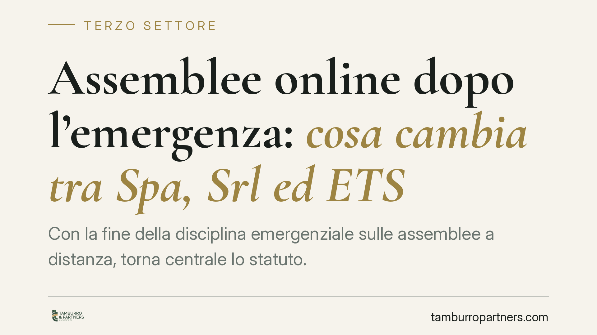

Assemblee online dopo l'emergenza: cosa cambia tra Spa, Srl ed ETS
Con la fine della disciplina emergenziale sulle assemblee a distanza, torna centrale lo statuto. Le regole cambiano in modo sensibile a seconda del soggetto: Spa, Srl ed Enti del Terzo settore seguono percorsi diversi. Capire chi può ancora riunirsi online, e a quali condizioni, è decisivo per non viziare le deliberazioni. Facciamo ordine, distinguendo i tre regimi e segnalando dove serve intervenire sullo statuto.

Il quadro: dalla deroga emergenziale al ritorno dello statuto
Durante la pandemia, l'art. 106 del d.l. n. 18/2020 (convertito dalla l. n. 27/2020) ha introdotto una disciplina speciale che consentiva alle società lo svolgimento delle assemblee con mezzi di telecomunicazione anche in assenza di una clausola statutaria che lo prevedesse. Si trattava di una norma a tempo, più volte prorogata.
Attenzione alla data. Il termine finale di applicazione dell'art. 106 è stato oggetto di proroghe successive disposte da diversi provvedimenti. Prima di programmare una convocazione a distanza, consigliamo di verificare l'ultimo provvedimento di proroga in vigore alla data della riunione: indicare qui una scadenza senza riscontro aggiornato esporrebbe a errori. Il punto fermo, invece, è questo: alla cessazione del regime speciale si torna integralmente alle regole ordinarie del codice civile e, per gli ETS, del Codice del Terzo settore.
Spa: serve la clausola statutaria
Per le società per azioni, l'intervento a distanza all'assemblea è ammesso se lo statuto lo prevede. Il riferimento è l'art. 2370, comma 4, cod. civ., che consente allo statuto di contemplare l'intervento mediante mezzi di telecomunicazione.
Senza questa clausola, venuta meno la deroga emergenziale, la partecipazione in collegamento diventa problematica. La possibilità di indicare nell'avviso di convocazione i mezzi di collegamento discende quindi dalla clausola statutaria e dalla prassi applicativa, non dal solo testo dell'art. 2366 cod. civ., che disciplina in generale contenuto e formalità dell'avviso.
Il rischio concreto è la contestazione della delibera. Il socio pretermesso o dissenziente può impugnare ai sensi dell'art. 2377 cod. civ.; per le decisioni dell'organo amministrativo rileva l'art. 2388 cod. civ.
Srl: margini più ampi, ma non illimitati
La Srl gode di maggiore flessibilità, coerente con la sua natura più personalistica. Lo statuto può modulare con ampia libertà le modalità di adozione delle decisioni dei soci, inclusi metodi non assembleari e collegamenti a distanza.
Anche qui, però, il perimetro è quello statutario. Le decisioni assunte in violazione delle regole di metodo sono esposte all'invalidità secondo l'art. 2479-ter cod. civ. Rivedere le clausole su convocazione e svolgimento resta il modo più sicuro per blindare le deliberazioni.
Enti del Terzo settore: il riferimento è l'art. 24 CTS
Per gli ETS il punto di partenza è l'art. 24 del d.lgs. n. 117/2017 (Codice del Terzo settore), che disciplina l'assemblea delle associazioni e rinvia all'atto costitutivo e allo statuto per la definizione delle modalità di intervento e di espressione del voto.
Anche gli enti hanno beneficiato, in parte, delle aperture emergenziali. Per questo è prudente non dare per scontato che "nulla cambi": molto dipende da cosa prevede concretamente lo statuto dell'ente. Dove lo statuto contempla già le riunioni e il voto a distanza, la prosecuzione è lineare; dove tace o pone divieti, occorre adeguare le clausole prima di convocare in modalità telematica. Per gli ETS iscritti al RUNTS, ogni modifica statutaria segue l'iter e i controlli previsti per l'aggiornamento del Registro.
Implicazioni pratiche
Il messaggio operativo è unico per tutti i soggetti: finita la stagione delle deroghe, la legittimità della riunione online si gioca sul testo dello statuto. Una delibera assunta a distanza senza base statutaria è una delibera impugnabile, con tutti i costi e le incertezze che ne derivano.
Cosa fare in concreto
- Verificate lo statuto prima di ogni convocazione: accertate la presenza di una clausola che ammetta intervento e voto a distanza.
- Controllate il regime in vigore: individuate l'ultimo provvedimento di proroga dell'art. 106 d.l. 18/2020 applicabile alla data della riunione.
- Adeguate le clausole se mancanti o ambigue, modulandole sul tipo (Spa, Srl, ETS) e, per gli ETS, pianificando l'aggiornamento al RUNTS.
- Curate l'avviso di convocazione: indicate con precisione piattaforma, modalità di accesso e di verifica dell'identità e del voto.
- Documentate lo svolgimento: verbalizzate presenze, collegamenti e votazioni per rendere tracciabile la regolarità della seduta.
Un intervento preventivo sullo statuto costa poco e previene contenziosi costosi.
Contributo informativo a cura di Tamburro & Partners - Avv. Giuseppe Tamburro. Non costituisce parere legale.
Ogni ente del terzo settore ha la sua storia.
Se rappresenti un ETS e vuoi un confronto su governance, RUNTS o fiscalità, scrivi allo studio. Ti rispondiamo entro un giorno lavorativo.